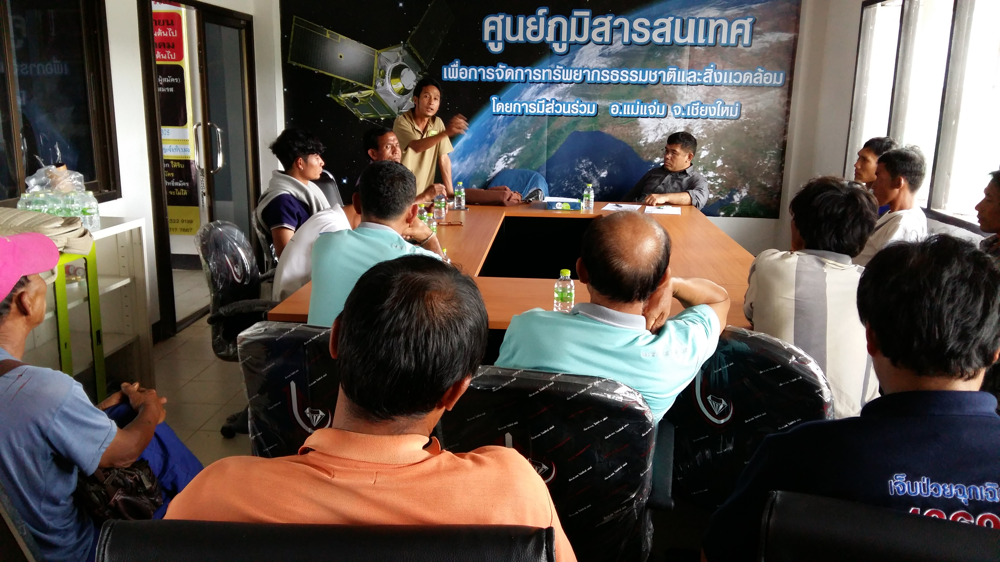
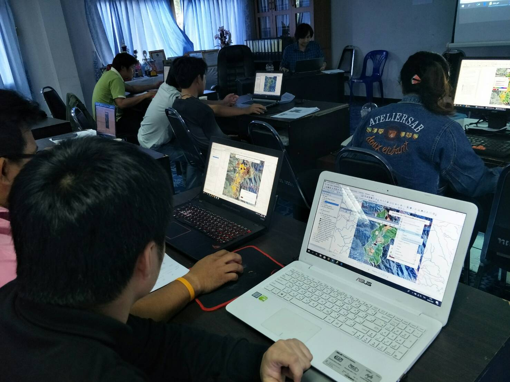

ศูนย์ภูมิสารสนเทศ
เพื่อการจัดการทรัพยากรธรรมชาติและสิ่งแวดล้อม
โดยการมีส่วนร่วมอำเภอแม่แจ่ม

ศูนย์ภูมิสารสนเทศเพื่อการจัดการทรัพยากรธรรมชาติและสิ่งแวดล้อมโดยการมีส่วนร่วมอำเภอแม่แจ่ม จัดตั้งขึ้นเมื่อเดือนมิถุนายน พ.ศ.2559 เป็นศูนย์สารสนเทศเชิงภูมิศาสตร์ที่ก่อตั้งขึ้นมาก่อนมีการกำหนดไว้ในยุทธศาสตร์ชาติ 20 ปี และแผนปฏิรูปประเทศ เพื่อบูรณาการงานข้อมูลภูมิสารสนเทศและข้อมูลอื่นที่เกี่ยวข้อง สำหรับจัดเก็บ ปรับแก้ ประมวลผล วิเคราะห์ ประยุกต์ใช้ แสดงผล และจำลองข้อมูลที่ปรากฏบนผิวโลกให้มาอยู่ในคอมพิวเตอร์ สำหรับนำมาใช้ในการบริหารจัดการ การสนับสนุน การวางแผน การกำกับติดตาม ตรวจสอบ และการตัดสินใจในกิจกรรมที่เกี่ยวกับพื้นที่ รวมถึงงานบริการข้อมูลภูมิสารสนเทศแก่หน่วยงานและองค์กรต่างๆ
ที่ผ่านมา ศูนย์ภูมิสารสนเทศฯอำเภอแม่แจ่ม ร่วมกับองค์กรภาคีเครือข่าย เริ่มต้นจากการทำข้อมูลแนวเขตการใช้ประโยชน์ที่ดินรายแปลง วิเคราะห์ข้อมูลเพื่อจำแนกเงื่อนไขการใช้ประโยชน์ที่ดินตามกรอบการจัดการที่ดินตามแนวทางแม่แจ่มโมเดลพลัสและตามกรอบมติคณะรัฐมนตรี จัดทำข้อมูลบริหารจัดการหมอกควันไฟป่า สร้างธรรมาภิบาลให้กับป่าและชุมชนเพื่อลดข้อขัดแย้งระหว่างรัฐกับชาวบ้าน บริการข้อมูลแนวเขตที่ดินรายแปลงสำหรับขึ้นทะเบียนเกษตรกร พัฒนาระบบจัดการภาษีให้แก่ท้องถิ่น จัดการภัยพิบัติในช่างรับมือปัญหาหมอควันไฟป่า ข้อมูลการจัดการน้ำ รวมถึงการประยุกต์ใช้ภูมิสารสนเทศกับงานพัฒนาด้านอื่นๆ ให้แก่องค์กรในท้องถิ่น
นอกจากนั้น ศูนย์ภูมิสารสนเทศฯอำเภอแม่แจ่ม ยังได้สนับสนุนองค์การบริหารส่วนตำบลและเทศบาลในอำเภอแม่แจ่มที่มีความพร้อม ยกระดับในการจัดการข้อมูลภูมิสารสนเทศด้วยตนเอง โดยจัดตั้งศูนย์ภูมิสารสนเทศไว้เป็นส่วนงานหนึ่งซึ่งจะช่วยเพิ่มศักยภาพขององค์กรท้องถิ่น ด้วยการจัดอบรมนักเทคนิคภูมิสารสนเทศให้กับเจ้าหน้าที่องค์การบริหารส่วนตำบลและเทศบาล ให้สามารถเก็บข้อมูล จัดทำข้อมูล ปรับแก้ ประมวลผล วิเคราะห์ และประยุกต์ใช้งานภูมิสารสนเทศกับงานส่วนอื่นๆ ได้

ปัจจุบัน ศูนย์ภูมิสารสนเทศฯอำเภอแม่แจ่ม ให้บริการแก่บุคคลและองค์กร ดังนี้
1. บริการข้อมูลแผนที่ภาพถ่ายดาวเทียมสีเขตปกครองหมู่บ้าน ตำบล และอำเภอ
2. บริการข้อมูลแผนที่ภาพถ่ายดาวเทียมการใช้ประโยชน์ที่ดินรายแปลง
3. ปริ้นแผนที่ภาพถ่ายดาวเทียมความละเอียดสูง ขนาด A0 (841 x 1,189 ม.ม.)
4. สนับสนุนข้อมูลเพื่อบริหารจัดการภัยพิบัติ
5. ตรวจสอบแนวเขตการใช้ประโยชน์ป่าไม้ที่ดิน
6. ตรวจสอบการเปลี่ยนแปลงพื้นที่ป่าไม้ด้วยระบบภูมิสารสนเทศ
7. ติดตามการเปลี่ยนแปลงสภาพพื้นที่ทำกินด้วยระบบภูมิสารสนเทศ
8. บริการข้อมูลภูมิสารสนเทศเพื่อบริหารจัดการพื้นที่
9. สนับสนุนข้อมูลเพื่อการตัดสินใจเชิงนโยบายส่วนราชการในอำเภอแม่แจ่ม
10. บริการข้อมูลแนวเขตที่ดินรายแปลงสำหรับขึ้นทะเบียนเกษตรกร
11. ใช้ภูมิสารสนเทศสนับสนุนจัดการหมอกควันไฟป่า